O Brasil possui riquezas tão fascinantes que parecem cena de filme, em Alagoas e na sua capital Maceió, além da comida típica, cultura e história, você também encontrará os cenários mais paradisíacos nacionais.
Pontos Turísticos
Praia do Gunga
Com o mar muito calmo, essa praia tem encontro do mar com o rio é possível fazer um passeio de Buggy até as falésias é considerada uma das praias mais bonitas do Brasil.
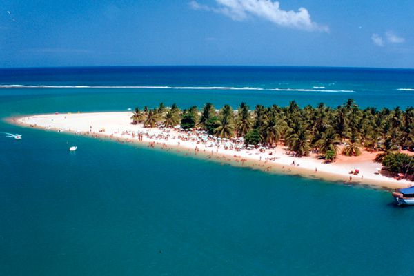
Praia de Carro Quebrado
Deserta e de paisagem única , encanta os turistas com as várias falésias coloridas.
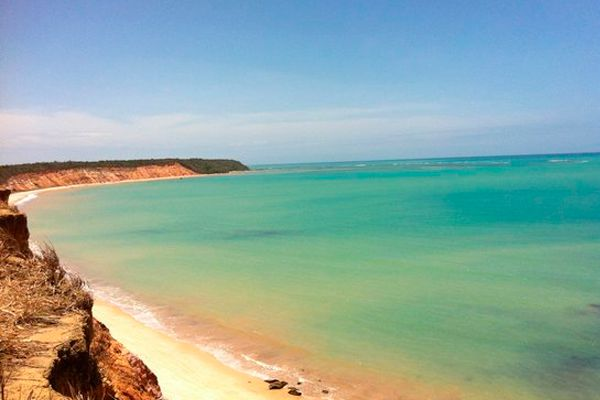
Paripueira
É um município de Maceió, possui uma das mais longas praias de maré baixa, onde é possível andar mar a dentro.
Praia de Ipioca
Com areia branca e águas claras, a praia é bem tranquila, um verdadeiro paraiso a céu aberto.
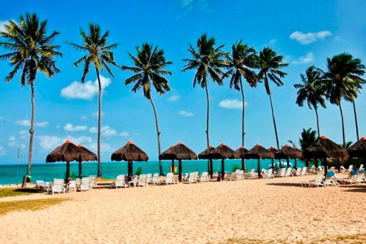
Pontos Turísticos Históricos
Museu René Bertholet
Em reconhecimento ao importante papel de Bertholet na construção da Cooperativa e de Pindorama, foi inaugurado em 2002 o museu denominado René Bertholet, instalado na casa onde viveu.
Esse memorial resgata e preserva a história de Pindorama e da Cooperativa, através de relatos, fotografias de todas as épocas da sua existência, documentos, livros, máquinas e equipamentos que foram utilizados ao longo do tempo, resultando na valorização do espaço de Pindorama e do patrimônio sociocultural.
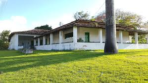
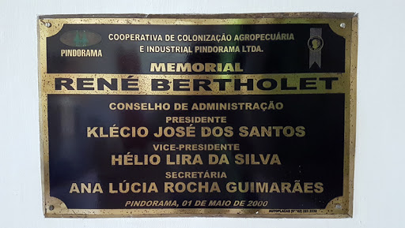
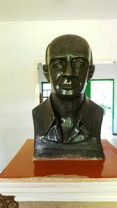
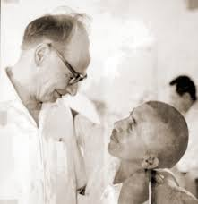
Museu Théo Brandão
Localizado entre o centro e Jaraguá, o Museu Théo Brandão de Antropologia e Folclore conta um pouco da história de Alagoas e do povo alagoano. O nome do museu deve-se ao fato de o local ter sido criado para abrigar a coleção de Théo Brandão, professor e folclorista.
Atualmente o museu está instalado no Palacete dos Machados e reúne em seus três andares diversos artigos relacionados à cultura alagoana. No passeio guiado pelo lugar pode-se conhecer as obras de artistas locais, objetos utilizados em comemorações populares, artesanatos postos à venda, objetos utilizados para manuseio de alimentos, imagens religiosas etc.
O passeio é interessante para pessoas de todas as idades e fica ainda melhor se for feito com a visita guiada (gratuita), que permite conhecer fatos desconhecidos por boa parte dos turistas - e até pelos nativos.
Memorial à República
O Memorial à República está localizado na orla da praia da Avenida, bairro histórico de Jaraguá, e foi inaugurado em 15 de novembro de 2005, com o objetivo de homenagear os dois Marechais alagoanos.
O Memorial à República tem como papel fundamental destacar a participação do estado de Alagoas na construção da República no Brasil, visto que o estado teve o privilégio de ser o berço dos dois primeiros presidentes da era republicana: Marechal Deodoro e Floriano Peixoto.
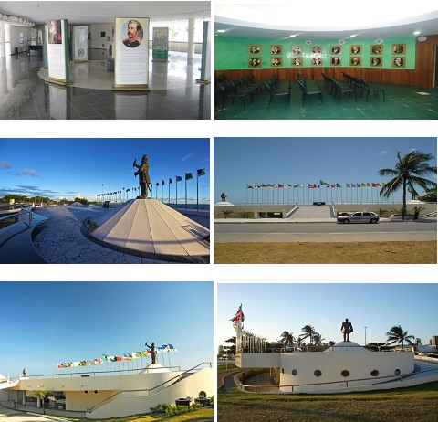
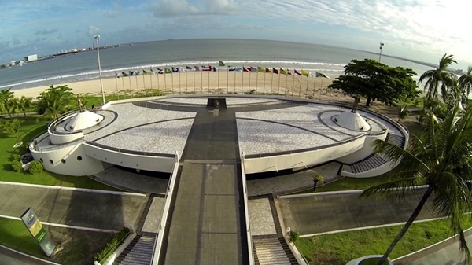
Parque Memorial Quilombo dos Palmares
O memorial
O Parque Memorial Quilombo dos Palmares foi implantado em 2007, em um platô (área plana) do alto da Serra da Barriga. O local, tombado pelo Instituto do Patrimônio Histórico e Artístico Nacional (Iphan) em 1985, recria o ambiente da República dos Palmares – o maior, mais duradouro e mais organizado quilombo já implantado nas Américas.
Nesta espécie de maquete viva, em tamanho natural, foram reconstituídas algumas das mais significativas edificações do Quilombo dos Palmares. Com paredes de pau-a-pique, cobertura vegetal e inscrições em banto e yorubá, avista-se o Onjó de farinha (Casa de farinha), Onjó Cruzambê (Casa do Campo Santo), Oxile das ervas (Terreiro das ervas), Ocas indígenas e Muxima de Palmares (Coração de Palmares).
No primeiro e único parque temático sobre a cultura negra do País, destacam-se, ainda, os mirantes, de onde se avistam paisagens magníficas da Serra da Barriga. São as atalaias de Acaiene, Acaiuba, e Toculo. Completando o ciclo das edificações simbólicas, o restaurante Kúuku-Wáana (Banquete familiar), que oferece pratos da culinária afro-brasileira, e o Batucajé (palco de manifestações artístico-culturais).

.jpg)
.jpg)
.jpg)
.jpg)
 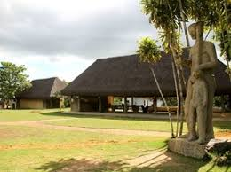
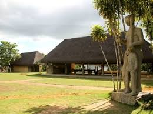